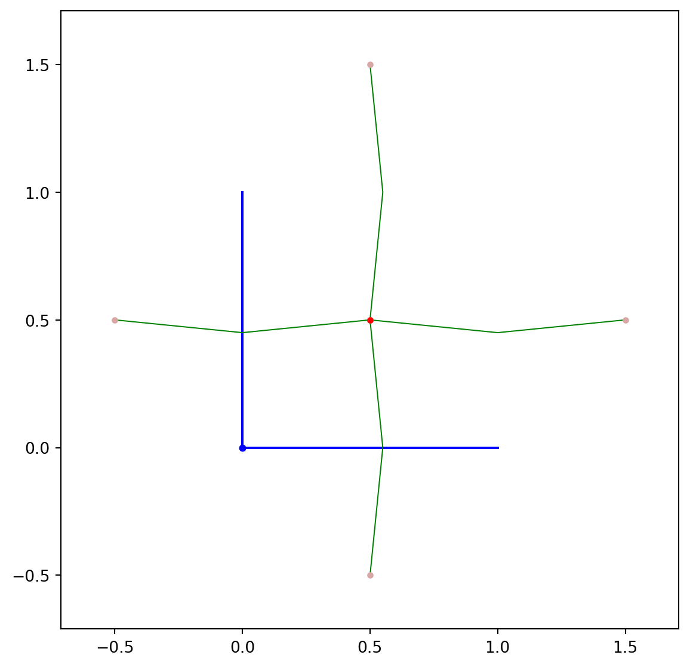

from pylab import *
from pythtb import *6 Introducción a Python Tight-Binding
Para ahorrarnos el proceso de escribir los hamiltonianos a mano, podemos usar la librería de pythtb. Esta nos permite definir un hamiltoniano de amarre fuerte si uno da de entrada los vectores de red, la posición de los orbitales y los hoppings.
6.1 Hamiltoniano de amarre fuerte de un cristal cuadrado con campo magnético
Buscamos describir una red cuadrada sobre la que actúa un campo magnético. Una red se define mediante dos vectores base \(\vec{a}_{1},\vec{a}_{2}\). Explítamente, una red es igual al conjunto de puntos de la forma \[\vec{R} = n_{1} \vec{a}_{1} + n_{2}\vec{a}_{2},\] donde \(n_{i} \in \mathbb{Z}\). Imaginamos que sobre cada punto de la red hay un orbital. A cada enlace entre dos órbitales le asociamos un hopping \(t\). Usualmente, sólo damos hoppings no nulos a los vecinos cercanos.
PythTB nos permite implementar cada uno de estos ingredientes en un código.
Primero, definimos los vectores base y los guardamos dentro de la variable vectoresRed. Posteriormente, definimos el sitio de los orbitales de nuestra red. La posición de los orbitales debe ser una combinación lineal de los vectores base. En este caso, para poner el orbital sobre los puntos de red la posición del orbital debe ser \(\vec{S} = 0 \cdot\vec{a}_{1} + 0\cdot\vec{a}_{2}\). Guardamos la posición del orbital en la variable sitio. Usualmente, habrá más de un órbital. Luego de definir la posición de todos los orbitales, debemos guardar sus posiciones en un nuevo array. En este modelo, sólo hay un orbital, pero lo guardamos en una lista llamada orbitales aparte para prepararnos al caso en que haya más orbitales.
Ya con esto listo podemos definir un objeto tb_model. La entrada a este modelo son la dimensión del espacio k, la dimensión del espacio r, los vectores de red y la lista con la posición de los orbitales. Ya hecho el modelo, podemos añadir hoppings. Para ello se usa el método set_hop. Este método recibe el valor del hopping, el índice del primer orbital del enalce (en este caso sólo hay un orbital cuyo índice es \(i = 0\)), el índice del segundo orbital en el enlace y el vector de red que apunta a la celda del segundo orbital.
Para ver que los hoppings se hayan puesto bien usamos el método visualize sobre nuestro modelo. La entrada de este método es sobre que vectores base se hará la visualización. En este caso sólo hay dos vectores y por ello ponemos \((0,1)\).
Notamos que por default pythtb añade los hoppings conjugados.
a1 = array([1,0])
a2 = array([0,1])
vectoresRed = array([a1,a2]) #0*a1 + 0*a2
sitio = array([1/2,1/2]) #Sitio del orbital
orbitales = array([sitio]) #Lista con todos los itios.
# Definimos el Hamiltoniano de amarre fuerte.
cuadrada = tb_model(2,2, vectoresRed, orbitales)
#Definimos los hoppings.
t = 1
cuadrada.set_hop(t,0,0,[1,0])
# Enlace entre orbital 0 y orbital 0 desplazo por 1*a1 + 0*a2
cuadrada.set_hop(t,0,0,[0,1])
# Enlace entre orbital 0 y orbital 0 desplazo por 0*a1 + 1*a2
cuadrada.visualize(0,1)
# (0,1) significa en la dirección de a1 y a2. 
También podemos crear superceldas, i.e., repeticiones de una celda unitaria. Para ello usamos la función make_supercell. La entrada de la celda es la modificación sobre los vectores de red.
cuadrada_grande = cuadrada.make_supercell([[10,2],[0,10]])
# [10,0] significa que el nuevo vector 1 es 10*a1 + 0*a2
# [0,10] significa que el nuevo vector 2 es 0*a1 + 10*a2
cuadrada_grande.visualize(0,1)
De la supercelda podemos cortar y hacer finita la celda en una dimensión. La entrada del vector Para ello usamos cut_piece.
cuadrada_cortada = cuadrada_grande.cut_piece(2,1)
# El (1,0) es cortar 1 vez en el vector a1. En a2 sigue siemdo finito.
cuadrada_cortada.visualize(0,1)Si aplicamos cut_piece dos veces podemos obtener un sistema finito.
cuadrada_cortada_cortada = cuadrada_cortada.cut_piece(1,0)
# El (0,2) es cortar 2 vez en el vector a1. En a2 sigue siemdo finito.
cuadrada_cortada_cortada.visualize(0,1)A este sistema finito podemos extraerle los eigenvalores usando solve_all.
eigenvalores = cuadrada_cortada_cortada.solve_all()print(eigenvalores)[-3.92005278e+00 -3.82835584e+00 -3.73798627e+00 -3.71159706e+00
-3.59339675e+00 -3.57760028e+00 -3.50780890e+00 -3.39972248e+00
-3.34931497e+00 -3.31922646e+00 -3.22924233e+00 -3.20570284e+00
-3.13024135e+00 -3.10086602e+00 -2.98442523e+00 -2.96460568e+00
-2.92196412e+00 -2.83389331e+00 -2.79983079e+00 -2.74954907e+00
-2.72437437e+00 -2.67120141e+00 -2.57675904e+00 -2.55112025e+00
-2.50719085e+00 -2.47732712e+00 -2.35105637e+00 -2.31057373e+00
-2.27532489e+00 -2.25986643e+00 -2.24120531e+00 -2.18963834e+00
-2.11818159e+00 -2.08500833e+00 -2.03922528e+00 -1.97433694e+00
-1.95715611e+00 -1.93319585e+00 -1.82770021e+00 -1.80813814e+00
-1.75409297e+00 -1.71362655e+00 -1.68861658e+00 -1.67412904e+00
-1.62194260e+00 -1.60087784e+00 -1.59431411e+00 -1.50989105e+00
-1.45541232e+00 -1.42320258e+00 -1.40172435e+00 -1.35884225e+00
-1.28890309e+00 -1.28348817e+00 -1.24593461e+00 -1.16599749e+00
-1.14671799e+00 -1.13543825e+00 -1.10738807e+00 -1.08480224e+00
-1.07081829e+00 -1.02475178e+00 -1.00702184e+00 -9.36429702e-01
-9.19811201e-01 -9.07683022e-01 -8.61455202e-01 -8.28072881e-01
-7.71931905e-01 -7.42997892e-01 -7.33945334e-01 -7.00911517e-01
-6.85313269e-01 -6.45746285e-01 -6.14329628e-01 -5.96102586e-01
-5.65390797e-01 -5.46175072e-01 -5.05724939e-01 -4.91988040e-01
-4.77349395e-01 -4.66942015e-01 -4.23285145e-01 -3.84221597e-01
-3.48104041e-01 -3.39395830e-01 -2.97179001e-01 -2.92457015e-01
-2.63663935e-01 -2.45679332e-01 -2.18286316e-01 -2.11405077e-01
-1.80895101e-01 -1.34603691e-01 -1.29153960e-01 -1.14933579e-01
-1.06014420e-01 -7.41505500e-02 -6.79517745e-02 -3.43460197e-02
-2.34958746e-15 -1.03338196e-15 -6.24998797e-16 -3.89748932e-16
-3.77574538e-16 -2.90087605e-16 -2.83938771e-16 -1.42157172e-16
-5.82722393e-17 0.00000000e+00 0.00000000e+00 0.00000000e+00
0.00000000e+00 0.00000000e+00 0.00000000e+00 0.00000000e+00
0.00000000e+00 0.00000000e+00 6.84196278e-17 1.15309256e-16
3.31023900e-16 3.63349827e-16 4.63757075e-16 5.01314276e-16
5.36407620e-16 8.42614279e-16 3.43460197e-02 6.79517745e-02
7.41505500e-02 1.06014420e-01 1.14933579e-01 1.29153960e-01
1.34603691e-01 1.80895101e-01 2.11405077e-01 2.18286316e-01
2.45679332e-01 2.63663935e-01 2.92457015e-01 2.97179001e-01
3.39395830e-01 3.48104041e-01 3.84221597e-01 4.23285145e-01
4.66942015e-01 4.77349395e-01 4.91988040e-01 5.05724939e-01
5.46175072e-01 5.65390797e-01 5.96102586e-01 6.14329628e-01
6.45746285e-01 6.85313269e-01 7.00911517e-01 7.33945334e-01
7.42997892e-01 7.71931905e-01 8.28072881e-01 8.61455202e-01
9.07683022e-01 9.19811201e-01 9.36429702e-01 1.00702184e+00
1.02475178e+00 1.07081829e+00 1.08480224e+00 1.10738807e+00
1.13543825e+00 1.14671799e+00 1.16599749e+00 1.24593461e+00
1.28348817e+00 1.28890309e+00 1.35884225e+00 1.40172435e+00
1.42320258e+00 1.45541232e+00 1.50989105e+00 1.59431411e+00
1.60087784e+00 1.62194260e+00 1.67412904e+00 1.68861658e+00
1.71362655e+00 1.75409297e+00 1.80813814e+00 1.82770021e+00
1.93319585e+00 1.95715611e+00 1.97433694e+00 2.03922528e+00
2.08500833e+00 2.11818159e+00 2.18963834e+00 2.24120531e+00
2.25986643e+00 2.27532489e+00 2.31057373e+00 2.35105637e+00
2.47732712e+00 2.50719085e+00 2.55112025e+00 2.57675904e+00
2.67120141e+00 2.72437437e+00 2.74954907e+00 2.79983079e+00
2.83389331e+00 2.92196412e+00 2.96460568e+00 2.98442523e+00
3.10086602e+00 3.13024135e+00 3.20570284e+00 3.22924233e+00
3.31922646e+00 3.34931497e+00 3.39972248e+00 3.50780890e+00
3.57760028e+00 3.59339675e+00 3.71159706e+00 3.73798627e+00
3.82835584e+00 3.92005278e+00]Otra función útil es la función display. Esta imprime todos los hoppings, i.e., imprime el Hamiltoniano. Además, la función da más información útil.
cuadrada_cortada_cortada.display()---------------------------------------
report of tight-binding model
---------------------------------------
k-space dimension = 0
r-space dimension = 2
number of spin components = 1
periodic directions = []
number of orbitals = 226
number of electronic states = 226
lattice vectors:
# 0 ===> [ 10.0 , 2.0 ]
# 1 ===> [ 0.0 , 10.0 ]
positions of orbitals:
# 0 ===> [ 0.05 , 0.04 ]
# 1 ===> [ 0.05 , 0.14 ]
# 2 ===> [ 0.05 , 0.24 ]
# 3 ===> [ 0.05 , 0.34 ]
# 4 ===> [ 0.05 , 0.44 ]
# 5 ===> [ 0.05 , 0.54 ]
# 6 ===> [ 0.05 , 0.64 ]
# 7 ===> [ 0.05 , 0.74 ]
# 8 ===> [ 0.05 , 0.84 ]
# 9 ===> [ 0.05 , 0.94 ]
# 10 ===> [ 0.05 , 1.04 ]
# 11 ===> [ 0.15 , 0.12 ]
# 12 ===> [ 0.15 , 0.22 ]
# 13 ===> [ 0.15 , 0.32 ]
# 14 ===> [ 0.15 , 0.42 ]
# 15 ===> [ 0.15 , 0.52 ]
# 16 ===> [ 0.15 , 0.62 ]
# 17 ===> [ 0.15 , 0.72 ]
# 18 ===> [ 0.15 , 0.82 ]
# 19 ===> [ 0.15 , 0.92 ]
# 20 ===> [ 0.15 , 1.02 ]
# 21 ===> [ 0.25 , 0.1 ]
# 22 ===> [ 0.25 , 0.2 ]
# 23 ===> [ 0.25 , 0.3 ]
# 24 ===> [ 0.25 , 0.4 ]
# 25 ===> [ 0.25 , 0.5 ]
# 26 ===> [ 0.25 , 0.6 ]
# 27 ===> [ 0.25 , 0.7 ]
# 28 ===> [ 0.25 , 0.8 ]
# 29 ===> [ 0.25 , 0.9 ]
# 30 ===> [ 0.25 , 1.0 ]
# 31 ===> [ 0.35 , 0.08 ]
# 32 ===> [ 0.35 , 0.18 ]
# 33 ===> [ 0.35 , 0.28 ]
# 34 ===> [ 0.35 , 0.38 ]
# 35 ===> [ 0.35 , 0.48 ]
# 36 ===> [ 0.35 , 0.58 ]
# 37 ===> [ 0.35 , 0.68 ]
# 38 ===> [ 0.35 , 0.78 ]
# 39 ===> [ 0.35 , 0.88 ]
# 40 ===> [ 0.35 , 0.98 ]
# 41 ===> [ 0.45 , 0.06 ]
# 42 ===> [ 0.45 , 0.16 ]
# 43 ===> [ 0.45 , 0.26 ]
# 44 ===> [ 0.45 , 0.36 ]
# 45 ===> [ 0.45 , 0.46 ]
# 46 ===> [ 0.45 , 0.56 ]
# 47 ===> [ 0.45 , 0.66 ]
# 48 ===> [ 0.45 , 0.76 ]
# 49 ===> [ 0.45 , 0.86 ]
# 50 ===> [ 0.45 , 0.96 ]
# 51 ===> [ 0.55 , 0.04 ]
# 52 ===> [ 0.55 , 0.14 ]
# 53 ===> [ 0.55 , 0.24 ]
# 54 ===> [ 0.55 , 0.34 ]
# 55 ===> [ 0.55 , 0.44 ]
# 56 ===> [ 0.55 , 0.54 ]
# 57 ===> [ 0.55 , 0.64 ]
# 58 ===> [ 0.55 , 0.74 ]
# 59 ===> [ 0.55 , 0.84 ]
# 60 ===> [ 0.55 , 0.94 ]
# 61 ===> [ 0.55 , 1.04 ]
# 62 ===> [ 0.65 , 0.12 ]
# 63 ===> [ 0.65 , 0.22 ]
# 64 ===> [ 0.65 , 0.32 ]
# 65 ===> [ 0.65 , 0.42 ]
# 66 ===> [ 0.65 , 0.52 ]
# 67 ===> [ 0.65 , 0.62 ]
# 68 ===> [ 0.65 , 0.72 ]
# 69 ===> [ 0.65 , 0.82 ]
# 70 ===> [ 0.65 , 0.92 ]
# 71 ===> [ 0.65 , 1.02 ]
# 72 ===> [ 0.75 , 0.1 ]
# 73 ===> [ 0.75 , 0.2 ]
# 74 ===> [ 0.75 , 0.3 ]
# 75 ===> [ 0.75 , 0.4 ]
# 76 ===> [ 0.75 , 0.5 ]
# 77 ===> [ 0.75 , 0.6 ]
# 78 ===> [ 0.75 , 0.7 ]
# 79 ===> [ 0.75 , 0.8 ]
# 80 ===> [ 0.75 , 0.9 ]
# 81 ===> [ 0.75 , 1.0 ]
# 82 ===> [ 0.85 , 0.08 ]
# 83 ===> [ 0.85 , 0.18 ]
# 84 ===> [ 0.85 , 0.28 ]
# 85 ===> [ 0.85 , 0.38 ]
# 86 ===> [ 0.85 , 0.48 ]
# 87 ===> [ 0.85 , 0.58 ]
# 88 ===> [ 0.85 , 0.68 ]
# 89 ===> [ 0.85 , 0.78 ]
# 90 ===> [ 0.85 , 0.88 ]
# 91 ===> [ 0.85 , 0.98 ]
# 92 ===> [ 0.95 , 0.06 ]
# 93 ===> [ 0.95 , 0.16 ]
# 94 ===> [ 0.95 , 0.26 ]
# 95 ===> [ 0.95 , 0.36 ]
# 96 ===> [ 0.95 , 0.46 ]
# 97 ===> [ 0.95 , 0.56 ]
# 98 ===> [ 0.95 , 0.66 ]
# 99 ===> [ 0.95 , 0.76 ]
# 100 ===> [ 0.95 , 0.86 ]
# 101 ===> [ 0.95 , 0.96 ]
# 102 ===> [ 1.05 , 0.04 ]
# 103 ===> [ 1.05 , 0.14 ]
# 104 ===> [ 1.05 , 0.24 ]
# 105 ===> [ 1.05 , 0.34 ]
# 106 ===> [ 1.05 , 0.44 ]
# 107 ===> [ 1.05 , 0.54 ]
# 108 ===> [ 1.05 , 0.64 ]
# 109 ===> [ 1.05 , 0.74 ]
# 110 ===> [ 1.05 , 0.84 ]
# 111 ===> [ 1.05 , 0.94 ]
# 112 ===> [ 0.05 , 0.04 ]
# 113 ===> [ 0.05 , 1.04 ]
# 114 ===> [ 0.05 , 1.14 ]
# 115 ===> [ 0.05 , 1.24 ]
# 116 ===> [ 0.05 , 1.34 ]
# 117 ===> [ 0.05 , 1.44 ]
# 118 ===> [ 0.05 , 1.54 ]
# 119 ===> [ 0.05 , 1.64 ]
# 120 ===> [ 0.05 , 1.74 ]
# 121 ===> [ 0.05 , 1.84 ]
# 122 ===> [ 0.05 , 1.94 ]
# 123 ===> [ 0.05 , 2.04 ]
# 124 ===> [ 0.15 , 1.12 ]
# 125 ===> [ 0.15 , 1.22 ]
# 126 ===> [ 0.15 , 1.32 ]
# 127 ===> [ 0.15 , 1.42 ]
# 128 ===> [ 0.15 , 1.52 ]
# 129 ===> [ 0.15 , 1.62 ]
# 130 ===> [ 0.15 , 1.72 ]
# 131 ===> [ 0.15 , 1.82 ]
# 132 ===> [ 0.15 , 1.92 ]
# 133 ===> [ 0.15 , 2.02 ]
# 134 ===> [ 0.25 , 1.1 ]
# 135 ===> [ 0.25 , 1.2 ]
# 136 ===> [ 0.25 , 1.3 ]
# 137 ===> [ 0.25 , 1.4 ]
# 138 ===> [ 0.25 , 1.5 ]
# 139 ===> [ 0.25 , 1.6 ]
# 140 ===> [ 0.25 , 1.7 ]
# 141 ===> [ 0.25 , 1.8 ]
# 142 ===> [ 0.25 , 1.9 ]
# 143 ===> [ 0.25 , 2.0 ]
# 144 ===> [ 0.35 , 1.08 ]
# 145 ===> [ 0.35 , 1.18 ]
# 146 ===> [ 0.35 , 1.28 ]
# 147 ===> [ 0.35 , 1.38 ]
# 148 ===> [ 0.35 , 1.48 ]
# 149 ===> [ 0.35 , 1.58 ]
# 150 ===> [ 0.35 , 1.68 ]
# 151 ===> [ 0.35 , 1.78 ]
# 152 ===> [ 0.35 , 1.88 ]
# 153 ===> [ 0.35 , 1.98 ]
# 154 ===> [ 0.45 , 1.06 ]
# 155 ===> [ 0.45 , 1.16 ]
# 156 ===> [ 0.45 , 1.26 ]
# 157 ===> [ 0.45 , 1.36 ]
# 158 ===> [ 0.45 , 1.46 ]
# 159 ===> [ 0.45 , 1.56 ]
# 160 ===> [ 0.45 , 1.66 ]
# 161 ===> [ 0.45 , 1.76 ]
# 162 ===> [ 0.45 , 1.86 ]
# 163 ===> [ 0.45 , 1.96 ]
# 164 ===> [ 0.55 , 1.04 ]
# 165 ===> [ 0.55 , 1.14 ]
# 166 ===> [ 0.55 , 1.24 ]
# 167 ===> [ 0.55 , 1.34 ]
# 168 ===> [ 0.55 , 1.44 ]
# 169 ===> [ 0.55 , 1.54 ]
# 170 ===> [ 0.55 , 1.64 ]
# 171 ===> [ 0.55 , 1.74 ]
# 172 ===> [ 0.55 , 1.84 ]
# 173 ===> [ 0.55 , 1.94 ]
# 174 ===> [ 0.55 , 2.04 ]
# 175 ===> [ 0.65 , 1.12 ]
# 176 ===> [ 0.65 , 1.22 ]
# 177 ===> [ 0.65 , 1.32 ]
# 178 ===> [ 0.65 , 1.42 ]
# 179 ===> [ 0.65 , 1.52 ]
# 180 ===> [ 0.65 , 1.62 ]
# 181 ===> [ 0.65 , 1.72 ]
# 182 ===> [ 0.65 , 1.82 ]
# 183 ===> [ 0.65 , 1.92 ]
# 184 ===> [ 0.65 , 2.02 ]
# 185 ===> [ 0.75 , 1.1 ]
# 186 ===> [ 0.75 , 1.2 ]
# 187 ===> [ 0.75 , 1.3 ]
# 188 ===> [ 0.75 , 1.4 ]
# 189 ===> [ 0.75 , 1.5 ]
# 190 ===> [ 0.75 , 1.6 ]
# 191 ===> [ 0.75 , 1.7 ]
# 192 ===> [ 0.75 , 1.8 ]
# 193 ===> [ 0.75 , 1.9 ]
# 194 ===> [ 0.75 , 2.0 ]
# 195 ===> [ 0.85 , 1.08 ]
# 196 ===> [ 0.85 , 1.18 ]
# 197 ===> [ 0.85 , 1.28 ]
# 198 ===> [ 0.85 , 1.38 ]
# 199 ===> [ 0.85 , 1.48 ]
# 200 ===> [ 0.85 , 1.58 ]
# 201 ===> [ 0.85 , 1.68 ]
# 202 ===> [ 0.85 , 1.78 ]
# 203 ===> [ 0.85 , 1.88 ]
# 204 ===> [ 0.85 , 1.98 ]
# 205 ===> [ 0.95 , 1.06 ]
# 206 ===> [ 0.95 , 1.16 ]
# 207 ===> [ 0.95 , 1.26 ]
# 208 ===> [ 0.95 , 1.36 ]
# 209 ===> [ 0.95 , 1.46 ]
# 210 ===> [ 0.95 , 1.56 ]
# 211 ===> [ 0.95 , 1.66 ]
# 212 ===> [ 0.95 , 1.76 ]
# 213 ===> [ 0.95 , 1.86 ]
# 214 ===> [ 0.95 , 1.96 ]
# 215 ===> [ 1.05 , 1.04 ]
# 216 ===> [ 1.05 , 1.14 ]
# 217 ===> [ 1.05 , 1.24 ]
# 218 ===> [ 1.05 , 1.34 ]
# 219 ===> [ 1.05 , 1.44 ]
# 220 ===> [ 1.05 , 1.54 ]
# 221 ===> [ 1.05 , 1.64 ]
# 222 ===> [ 1.05 , 1.74 ]
# 223 ===> [ 1.05 , 1.84 ]
# 224 ===> [ 1.05 , 1.94 ]
# 225 ===> [ 0.05 , 1.04 ]
site energies:
# 0 ===> 0.0
# 1 ===> 0.0
# 2 ===> 0.0
# 3 ===> 0.0
# 4 ===> 0.0
# 5 ===> 0.0
# 6 ===> 0.0
# 7 ===> 0.0
# 8 ===> 0.0
# 9 ===> 0.0
# 10 ===> 0.0
# 11 ===> 0.0
# 12 ===> 0.0
# 13 ===> 0.0
# 14 ===> 0.0
# 15 ===> 0.0
# 16 ===> 0.0
# 17 ===> 0.0
# 18 ===> 0.0
# 19 ===> 0.0
# 20 ===> 0.0
# 21 ===> 0.0
# 22 ===> 0.0
# 23 ===> 0.0
# 24 ===> 0.0
# 25 ===> 0.0
# 26 ===> 0.0
# 27 ===> 0.0
# 28 ===> 0.0
# 29 ===> 0.0
# 30 ===> 0.0
# 31 ===> 0.0
# 32 ===> 0.0
# 33 ===> 0.0
# 34 ===> 0.0
# 35 ===> 0.0
# 36 ===> 0.0
# 37 ===> 0.0
# 38 ===> 0.0
# 39 ===> 0.0
# 40 ===> 0.0
# 41 ===> 0.0
# 42 ===> 0.0
# 43 ===> 0.0
# 44 ===> 0.0
# 45 ===> 0.0
# 46 ===> 0.0
# 47 ===> 0.0
# 48 ===> 0.0
# 49 ===> 0.0
# 50 ===> 0.0
# 51 ===> 0.0
# 52 ===> 0.0
# 53 ===> 0.0
# 54 ===> 0.0
# 55 ===> 0.0
# 56 ===> 0.0
# 57 ===> 0.0
# 58 ===> 0.0
# 59 ===> 0.0
# 60 ===> 0.0
# 61 ===> 0.0
# 62 ===> 0.0
# 63 ===> 0.0
# 64 ===> 0.0
# 65 ===> 0.0
# 66 ===> 0.0
# 67 ===> 0.0
# 68 ===> 0.0
# 69 ===> 0.0
# 70 ===> 0.0
# 71 ===> 0.0
# 72 ===> 0.0
# 73 ===> 0.0
# 74 ===> 0.0
# 75 ===> 0.0
# 76 ===> 0.0
# 77 ===> 0.0
# 78 ===> 0.0
# 79 ===> 0.0
# 80 ===> 0.0
# 81 ===> 0.0
# 82 ===> 0.0
# 83 ===> 0.0
# 84 ===> 0.0
# 85 ===> 0.0
# 86 ===> 0.0
# 87 ===> 0.0
# 88 ===> 0.0
# 89 ===> 0.0
# 90 ===> 0.0
# 91 ===> 0.0
# 92 ===> 0.0
# 93 ===> 0.0
# 94 ===> 0.0
# 95 ===> 0.0
# 96 ===> 0.0
# 97 ===> 0.0
# 98 ===> 0.0
# 99 ===> 0.0
# 100 ===> 0.0
# 101 ===> 0.0
# 102 ===> 0.0
# 103 ===> 0.0
# 104 ===> 0.0
# 105 ===> 0.0
# 106 ===> 0.0
# 107 ===> 0.0
# 108 ===> 0.0
# 109 ===> 0.0
# 110 ===> 0.0
# 111 ===> 0.0
# 112 ===> 0.0
# 113 ===> 0.0
# 114 ===> 0.0
# 115 ===> 0.0
# 116 ===> 0.0
# 117 ===> 0.0
# 118 ===> 0.0
# 119 ===> 0.0
# 120 ===> 0.0
# 121 ===> 0.0
# 122 ===> 0.0
# 123 ===> 0.0
# 124 ===> 0.0
# 125 ===> 0.0
# 126 ===> 0.0
# 127 ===> 0.0
# 128 ===> 0.0
# 129 ===> 0.0
# 130 ===> 0.0
# 131 ===> 0.0
# 132 ===> 0.0
# 133 ===> 0.0
# 134 ===> 0.0
# 135 ===> 0.0
# 136 ===> 0.0
# 137 ===> 0.0
# 138 ===> 0.0
# 139 ===> 0.0
# 140 ===> 0.0
# 141 ===> 0.0
# 142 ===> 0.0
# 143 ===> 0.0
# 144 ===> 0.0
# 145 ===> 0.0
# 146 ===> 0.0
# 147 ===> 0.0
# 148 ===> 0.0
# 149 ===> 0.0
# 150 ===> 0.0
# 151 ===> 0.0
# 152 ===> 0.0
# 153 ===> 0.0
# 154 ===> 0.0
# 155 ===> 0.0
# 156 ===> 0.0
# 157 ===> 0.0
# 158 ===> 0.0
# 159 ===> 0.0
# 160 ===> 0.0
# 161 ===> 0.0
# 162 ===> 0.0
# 163 ===> 0.0
# 164 ===> 0.0
# 165 ===> 0.0
# 166 ===> 0.0
# 167 ===> 0.0
# 168 ===> 0.0
# 169 ===> 0.0
# 170 ===> 0.0
# 171 ===> 0.0
# 172 ===> 0.0
# 173 ===> 0.0
# 174 ===> 0.0
# 175 ===> 0.0
# 176 ===> 0.0
# 177 ===> 0.0
# 178 ===> 0.0
# 179 ===> 0.0
# 180 ===> 0.0
# 181 ===> 0.0
# 182 ===> 0.0
# 183 ===> 0.0
# 184 ===> 0.0
# 185 ===> 0.0
# 186 ===> 0.0
# 187 ===> 0.0
# 188 ===> 0.0
# 189 ===> 0.0
# 190 ===> 0.0
# 191 ===> 0.0
# 192 ===> 0.0
# 193 ===> 0.0
# 194 ===> 0.0
# 195 ===> 0.0
# 196 ===> 0.0
# 197 ===> 0.0
# 198 ===> 0.0
# 199 ===> 0.0
# 200 ===> 0.0
# 201 ===> 0.0
# 202 ===> 0.0
# 203 ===> 0.0
# 204 ===> 0.0
# 205 ===> 0.0
# 206 ===> 0.0
# 207 ===> 0.0
# 208 ===> 0.0
# 209 ===> 0.0
# 210 ===> 0.0
# 211 ===> 0.0
# 212 ===> 0.0
# 213 ===> 0.0
# 214 ===> 0.0
# 215 ===> 0.0
# 216 ===> 0.0
# 217 ===> 0.0
# 218 ===> 0.0
# 219 ===> 0.0
# 220 ===> 0.0
# 221 ===> 0.0
# 222 ===> 0.0
# 223 ===> 0.0
# 224 ===> 0.0
# 225 ===> 0.0
hoppings:
< 0 | H | 1 > ===> 1.0 + 0.0 i
< 1 | H | 11 > ===> 1.0 + 0.0 i
< 1 | H | 2 > ===> 1.0 + 0.0 i
< 2 | H | 12 > ===> 1.0 + 0.0 i
< 2 | H | 3 > ===> 1.0 + 0.0 i
< 3 | H | 13 > ===> 1.0 + 0.0 i
< 3 | H | 4 > ===> 1.0 + 0.0 i
< 4 | H | 14 > ===> 1.0 + 0.0 i
< 4 | H | 5 > ===> 1.0 + 0.0 i
< 5 | H | 15 > ===> 1.0 + 0.0 i
< 5 | H | 6 > ===> 1.0 + 0.0 i
< 6 | H | 16 > ===> 1.0 + 0.0 i
< 6 | H | 7 > ===> 1.0 + 0.0 i
< 7 | H | 17 > ===> 1.0 + 0.0 i
< 7 | H | 8 > ===> 1.0 + 0.0 i
< 8 | H | 18 > ===> 1.0 + 0.0 i
< 8 | H | 9 > ===> 1.0 + 0.0 i
< 9 | H | 19 > ===> 1.0 + 0.0 i
< 9 | H | 113 > ===> 1.0 + 0.0 i
< 10 | H | 20 > ===> 1.0 + 0.0 i
< 10 | H | 114 > ===> 1.0 + 0.0 i
< 11 | H | 21 > ===> 1.0 + 0.0 i
< 11 | H | 12 > ===> 1.0 + 0.0 i
< 12 | H | 22 > ===> 1.0 + 0.0 i
< 12 | H | 13 > ===> 1.0 + 0.0 i
< 13 | H | 23 > ===> 1.0 + 0.0 i
< 13 | H | 14 > ===> 1.0 + 0.0 i
< 14 | H | 24 > ===> 1.0 + 0.0 i
< 14 | H | 15 > ===> 1.0 + 0.0 i
< 15 | H | 25 > ===> 1.0 + 0.0 i
< 15 | H | 16 > ===> 1.0 + 0.0 i
< 16 | H | 26 > ===> 1.0 + 0.0 i
< 16 | H | 17 > ===> 1.0 + 0.0 i
< 17 | H | 27 > ===> 1.0 + 0.0 i
< 17 | H | 18 > ===> 1.0 + 0.0 i
< 18 | H | 28 > ===> 1.0 + 0.0 i
< 18 | H | 19 > ===> 1.0 + 0.0 i
< 19 | H | 29 > ===> 1.0 + 0.0 i
< 19 | H | 20 > ===> 1.0 + 0.0 i
< 20 | H | 30 > ===> 1.0 + 0.0 i
< 20 | H | 124 > ===> 1.0 + 0.0 i
< 21 | H | 31 > ===> 1.0 + 0.0 i
< 21 | H | 22 > ===> 1.0 + 0.0 i
< 22 | H | 32 > ===> 1.0 + 0.0 i
< 22 | H | 23 > ===> 1.0 + 0.0 i
< 23 | H | 33 > ===> 1.0 + 0.0 i
< 23 | H | 24 > ===> 1.0 + 0.0 i
< 24 | H | 34 > ===> 1.0 + 0.0 i
< 24 | H | 25 > ===> 1.0 + 0.0 i
< 25 | H | 35 > ===> 1.0 + 0.0 i
< 25 | H | 26 > ===> 1.0 + 0.0 i
< 26 | H | 36 > ===> 1.0 + 0.0 i
< 26 | H | 27 > ===> 1.0 + 0.0 i
< 27 | H | 37 > ===> 1.0 + 0.0 i
< 27 | H | 28 > ===> 1.0 + 0.0 i
< 28 | H | 38 > ===> 1.0 + 0.0 i
< 28 | H | 29 > ===> 1.0 + 0.0 i
< 29 | H | 39 > ===> 1.0 + 0.0 i
< 29 | H | 30 > ===> 1.0 + 0.0 i
< 30 | H | 40 > ===> 1.0 + 0.0 i
< 30 | H | 134 > ===> 1.0 + 0.0 i
< 31 | H | 41 > ===> 1.0 + 0.0 i
< 31 | H | 32 > ===> 1.0 + 0.0 i
< 32 | H | 42 > ===> 1.0 + 0.0 i
< 32 | H | 33 > ===> 1.0 + 0.0 i
< 33 | H | 43 > ===> 1.0 + 0.0 i
< 33 | H | 34 > ===> 1.0 + 0.0 i
< 34 | H | 44 > ===> 1.0 + 0.0 i
< 34 | H | 35 > ===> 1.0 + 0.0 i
< 35 | H | 45 > ===> 1.0 + 0.0 i
< 35 | H | 36 > ===> 1.0 + 0.0 i
< 36 | H | 46 > ===> 1.0 + 0.0 i
< 36 | H | 37 > ===> 1.0 + 0.0 i
< 37 | H | 47 > ===> 1.0 + 0.0 i
< 37 | H | 38 > ===> 1.0 + 0.0 i
< 38 | H | 48 > ===> 1.0 + 0.0 i
< 38 | H | 39 > ===> 1.0 + 0.0 i
< 39 | H | 49 > ===> 1.0 + 0.0 i
< 39 | H | 40 > ===> 1.0 + 0.0 i
< 40 | H | 50 > ===> 1.0 + 0.0 i
< 40 | H | 144 > ===> 1.0 + 0.0 i
< 41 | H | 42 > ===> 1.0 + 0.0 i
< 42 | H | 52 > ===> 1.0 + 0.0 i
< 42 | H | 43 > ===> 1.0 + 0.0 i
< 43 | H | 53 > ===> 1.0 + 0.0 i
< 43 | H | 44 > ===> 1.0 + 0.0 i
< 44 | H | 54 > ===> 1.0 + 0.0 i
< 44 | H | 45 > ===> 1.0 + 0.0 i
< 45 | H | 55 > ===> 1.0 + 0.0 i
< 45 | H | 46 > ===> 1.0 + 0.0 i
< 46 | H | 56 > ===> 1.0 + 0.0 i
< 46 | H | 47 > ===> 1.0 + 0.0 i
< 47 | H | 57 > ===> 1.0 + 0.0 i
< 47 | H | 48 > ===> 1.0 + 0.0 i
< 48 | H | 58 > ===> 1.0 + 0.0 i
< 48 | H | 49 > ===> 1.0 + 0.0 i
< 49 | H | 59 > ===> 1.0 + 0.0 i
< 49 | H | 50 > ===> 1.0 + 0.0 i
< 50 | H | 60 > ===> 1.0 + 0.0 i
< 50 | H | 154 > ===> 1.0 + 0.0 i
< 51 | H | 52 > ===> 1.0 + 0.0 i
< 52 | H | 62 > ===> 1.0 + 0.0 i
< 52 | H | 53 > ===> 1.0 + 0.0 i
< 53 | H | 63 > ===> 1.0 + 0.0 i
< 53 | H | 54 > ===> 1.0 + 0.0 i
< 54 | H | 64 > ===> 1.0 + 0.0 i
< 54 | H | 55 > ===> 1.0 + 0.0 i
< 55 | H | 65 > ===> 1.0 + 0.0 i
< 55 | H | 56 > ===> 1.0 + 0.0 i
< 56 | H | 66 > ===> 1.0 + 0.0 i
< 56 | H | 57 > ===> 1.0 + 0.0 i
< 57 | H | 67 > ===> 1.0 + 0.0 i
< 57 | H | 58 > ===> 1.0 + 0.0 i
< 58 | H | 68 > ===> 1.0 + 0.0 i
< 58 | H | 59 > ===> 1.0 + 0.0 i
< 59 | H | 69 > ===> 1.0 + 0.0 i
< 59 | H | 60 > ===> 1.0 + 0.0 i
< 60 | H | 70 > ===> 1.0 + 0.0 i
< 60 | H | 164 > ===> 1.0 + 0.0 i
< 61 | H | 71 > ===> 1.0 + 0.0 i
< 61 | H | 165 > ===> 1.0 + 0.0 i
< 62 | H | 72 > ===> 1.0 + 0.0 i
< 62 | H | 63 > ===> 1.0 + 0.0 i
< 63 | H | 73 > ===> 1.0 + 0.0 i
< 63 | H | 64 > ===> 1.0 + 0.0 i
< 64 | H | 74 > ===> 1.0 + 0.0 i
< 64 | H | 65 > ===> 1.0 + 0.0 i
< 65 | H | 75 > ===> 1.0 + 0.0 i
< 65 | H | 66 > ===> 1.0 + 0.0 i
< 66 | H | 76 > ===> 1.0 + 0.0 i
< 66 | H | 67 > ===> 1.0 + 0.0 i
< 67 | H | 77 > ===> 1.0 + 0.0 i
< 67 | H | 68 > ===> 1.0 + 0.0 i
< 68 | H | 78 > ===> 1.0 + 0.0 i
< 68 | H | 69 > ===> 1.0 + 0.0 i
< 69 | H | 79 > ===> 1.0 + 0.0 i
< 69 | H | 70 > ===> 1.0 + 0.0 i
< 70 | H | 80 > ===> 1.0 + 0.0 i
< 70 | H | 71 > ===> 1.0 + 0.0 i
< 71 | H | 81 > ===> 1.0 + 0.0 i
< 71 | H | 175 > ===> 1.0 + 0.0 i
< 72 | H | 82 > ===> 1.0 + 0.0 i
< 72 | H | 73 > ===> 1.0 + 0.0 i
< 73 | H | 83 > ===> 1.0 + 0.0 i
< 73 | H | 74 > ===> 1.0 + 0.0 i
< 74 | H | 84 > ===> 1.0 + 0.0 i
< 74 | H | 75 > ===> 1.0 + 0.0 i
< 75 | H | 85 > ===> 1.0 + 0.0 i
< 75 | H | 76 > ===> 1.0 + 0.0 i
< 76 | H | 86 > ===> 1.0 + 0.0 i
< 76 | H | 77 > ===> 1.0 + 0.0 i
< 77 | H | 87 > ===> 1.0 + 0.0 i
< 77 | H | 78 > ===> 1.0 + 0.0 i
< 78 | H | 88 > ===> 1.0 + 0.0 i
< 78 | H | 79 > ===> 1.0 + 0.0 i
< 79 | H | 89 > ===> 1.0 + 0.0 i
< 79 | H | 80 > ===> 1.0 + 0.0 i
< 80 | H | 90 > ===> 1.0 + 0.0 i
< 80 | H | 81 > ===> 1.0 + 0.0 i
< 81 | H | 91 > ===> 1.0 + 0.0 i
< 81 | H | 185 > ===> 1.0 + 0.0 i
< 82 | H | 92 > ===> 1.0 + 0.0 i
< 82 | H | 83 > ===> 1.0 + 0.0 i
< 83 | H | 93 > ===> 1.0 + 0.0 i
< 83 | H | 84 > ===> 1.0 + 0.0 i
< 84 | H | 94 > ===> 1.0 + 0.0 i
< 84 | H | 85 > ===> 1.0 + 0.0 i
< 85 | H | 95 > ===> 1.0 + 0.0 i
< 85 | H | 86 > ===> 1.0 + 0.0 i
< 86 | H | 96 > ===> 1.0 + 0.0 i
< 86 | H | 87 > ===> 1.0 + 0.0 i
< 87 | H | 97 > ===> 1.0 + 0.0 i
< 87 | H | 88 > ===> 1.0 + 0.0 i
< 88 | H | 98 > ===> 1.0 + 0.0 i
< 88 | H | 89 > ===> 1.0 + 0.0 i
< 89 | H | 99 > ===> 1.0 + 0.0 i
< 89 | H | 90 > ===> 1.0 + 0.0 i
< 90 | H | 100 > ===> 1.0 + 0.0 i
< 90 | H | 91 > ===> 1.0 + 0.0 i
< 91 | H | 101 > ===> 1.0 + 0.0 i
< 91 | H | 195 > ===> 1.0 + 0.0 i
< 92 | H | 93 > ===> 1.0 + 0.0 i
< 93 | H | 94 > ===> 1.0 + 0.0 i
< 94 | H | 95 > ===> 1.0 + 0.0 i
< 95 | H | 96 > ===> 1.0 + 0.0 i
< 96 | H | 97 > ===> 1.0 + 0.0 i
< 97 | H | 98 > ===> 1.0 + 0.0 i
< 98 | H | 99 > ===> 1.0 + 0.0 i
< 99 | H | 100 > ===> 1.0 + 0.0 i
< 100 | H | 101 > ===> 1.0 + 0.0 i
< 101 | H | 205 > ===> 1.0 + 0.0 i
< 112 | H | 1 > ===> 1.0 + 0.0 i
< 113 | H | 20 > ===> 1.0 + 0.0 i
< 113 | H | 114 > ===> 1.0 + 0.0 i
< 114 | H | 124 > ===> 1.0 + 0.0 i
< 114 | H | 115 > ===> 1.0 + 0.0 i
< 115 | H | 125 > ===> 1.0 + 0.0 i
< 115 | H | 116 > ===> 1.0 + 0.0 i
< 116 | H | 126 > ===> 1.0 + 0.0 i
< 116 | H | 117 > ===> 1.0 + 0.0 i
< 117 | H | 127 > ===> 1.0 + 0.0 i
< 117 | H | 118 > ===> 1.0 + 0.0 i
< 118 | H | 128 > ===> 1.0 + 0.0 i
< 118 | H | 119 > ===> 1.0 + 0.0 i
< 119 | H | 129 > ===> 1.0 + 0.0 i
< 119 | H | 120 > ===> 1.0 + 0.0 i
< 120 | H | 130 > ===> 1.0 + 0.0 i
< 120 | H | 121 > ===> 1.0 + 0.0 i
< 121 | H | 131 > ===> 1.0 + 0.0 i
< 121 | H | 122 > ===> 1.0 + 0.0 i
< 122 | H | 132 > ===> 1.0 + 0.0 i
< 123 | H | 133 > ===> 1.0 + 0.0 i
< 124 | H | 134 > ===> 1.0 + 0.0 i
< 124 | H | 125 > ===> 1.0 + 0.0 i
< 125 | H | 135 > ===> 1.0 + 0.0 i
< 125 | H | 126 > ===> 1.0 + 0.0 i
< 126 | H | 136 > ===> 1.0 + 0.0 i
< 126 | H | 127 > ===> 1.0 + 0.0 i
< 127 | H | 137 > ===> 1.0 + 0.0 i
< 127 | H | 128 > ===> 1.0 + 0.0 i
< 128 | H | 138 > ===> 1.0 + 0.0 i
< 128 | H | 129 > ===> 1.0 + 0.0 i
< 129 | H | 139 > ===> 1.0 + 0.0 i
< 129 | H | 130 > ===> 1.0 + 0.0 i
< 130 | H | 140 > ===> 1.0 + 0.0 i
< 130 | H | 131 > ===> 1.0 + 0.0 i
< 131 | H | 141 > ===> 1.0 + 0.0 i
< 131 | H | 132 > ===> 1.0 + 0.0 i
< 132 | H | 142 > ===> 1.0 + 0.0 i
< 132 | H | 133 > ===> 1.0 + 0.0 i
< 133 | H | 143 > ===> 1.0 + 0.0 i
< 134 | H | 144 > ===> 1.0 + 0.0 i
< 134 | H | 135 > ===> 1.0 + 0.0 i
< 135 | H | 145 > ===> 1.0 + 0.0 i
< 135 | H | 136 > ===> 1.0 + 0.0 i
< 136 | H | 146 > ===> 1.0 + 0.0 i
< 136 | H | 137 > ===> 1.0 + 0.0 i
< 137 | H | 147 > ===> 1.0 + 0.0 i
< 137 | H | 138 > ===> 1.0 + 0.0 i
< 138 | H | 148 > ===> 1.0 + 0.0 i
< 138 | H | 139 > ===> 1.0 + 0.0 i
< 139 | H | 149 > ===> 1.0 + 0.0 i
< 139 | H | 140 > ===> 1.0 + 0.0 i
< 140 | H | 150 > ===> 1.0 + 0.0 i
< 140 | H | 141 > ===> 1.0 + 0.0 i
< 141 | H | 151 > ===> 1.0 + 0.0 i
< 141 | H | 142 > ===> 1.0 + 0.0 i
< 142 | H | 152 > ===> 1.0 + 0.0 i
< 142 | H | 143 > ===> 1.0 + 0.0 i
< 143 | H | 153 > ===> 1.0 + 0.0 i
< 144 | H | 154 > ===> 1.0 + 0.0 i
< 144 | H | 145 > ===> 1.0 + 0.0 i
< 145 | H | 155 > ===> 1.0 + 0.0 i
< 145 | H | 146 > ===> 1.0 + 0.0 i
< 146 | H | 156 > ===> 1.0 + 0.0 i
< 146 | H | 147 > ===> 1.0 + 0.0 i
< 147 | H | 157 > ===> 1.0 + 0.0 i
< 147 | H | 148 > ===> 1.0 + 0.0 i
< 148 | H | 158 > ===> 1.0 + 0.0 i
< 148 | H | 149 > ===> 1.0 + 0.0 i
< 149 | H | 159 > ===> 1.0 + 0.0 i
< 149 | H | 150 > ===> 1.0 + 0.0 i
< 150 | H | 160 > ===> 1.0 + 0.0 i
< 150 | H | 151 > ===> 1.0 + 0.0 i
< 151 | H | 161 > ===> 1.0 + 0.0 i
< 151 | H | 152 > ===> 1.0 + 0.0 i
< 152 | H | 162 > ===> 1.0 + 0.0 i
< 152 | H | 153 > ===> 1.0 + 0.0 i
< 153 | H | 163 > ===> 1.0 + 0.0 i
< 154 | H | 61 > ===> 1.0 + 0.0 i
< 154 | H | 155 > ===> 1.0 + 0.0 i
< 155 | H | 165 > ===> 1.0 + 0.0 i
< 155 | H | 156 > ===> 1.0 + 0.0 i
< 156 | H | 166 > ===> 1.0 + 0.0 i
< 156 | H | 157 > ===> 1.0 + 0.0 i
< 157 | H | 167 > ===> 1.0 + 0.0 i
< 157 | H | 158 > ===> 1.0 + 0.0 i
< 158 | H | 168 > ===> 1.0 + 0.0 i
< 158 | H | 159 > ===> 1.0 + 0.0 i
< 159 | H | 169 > ===> 1.0 + 0.0 i
< 159 | H | 160 > ===> 1.0 + 0.0 i
< 160 | H | 170 > ===> 1.0 + 0.0 i
< 160 | H | 161 > ===> 1.0 + 0.0 i
< 161 | H | 171 > ===> 1.0 + 0.0 i
< 161 | H | 162 > ===> 1.0 + 0.0 i
< 162 | H | 172 > ===> 1.0 + 0.0 i
< 162 | H | 163 > ===> 1.0 + 0.0 i
< 163 | H | 173 > ===> 1.0 + 0.0 i
< 164 | H | 71 > ===> 1.0 + 0.0 i
< 164 | H | 165 > ===> 1.0 + 0.0 i
< 165 | H | 175 > ===> 1.0 + 0.0 i
< 165 | H | 166 > ===> 1.0 + 0.0 i
< 166 | H | 176 > ===> 1.0 + 0.0 i
< 166 | H | 167 > ===> 1.0 + 0.0 i
< 167 | H | 177 > ===> 1.0 + 0.0 i
< 167 | H | 168 > ===> 1.0 + 0.0 i
< 168 | H | 178 > ===> 1.0 + 0.0 i
< 168 | H | 169 > ===> 1.0 + 0.0 i
< 169 | H | 179 > ===> 1.0 + 0.0 i
< 169 | H | 170 > ===> 1.0 + 0.0 i
< 170 | H | 180 > ===> 1.0 + 0.0 i
< 170 | H | 171 > ===> 1.0 + 0.0 i
< 171 | H | 181 > ===> 1.0 + 0.0 i
< 171 | H | 172 > ===> 1.0 + 0.0 i
< 172 | H | 182 > ===> 1.0 + 0.0 i
< 172 | H | 173 > ===> 1.0 + 0.0 i
< 173 | H | 183 > ===> 1.0 + 0.0 i
< 174 | H | 184 > ===> 1.0 + 0.0 i
< 175 | H | 185 > ===> 1.0 + 0.0 i
< 175 | H | 176 > ===> 1.0 + 0.0 i
< 176 | H | 186 > ===> 1.0 + 0.0 i
< 176 | H | 177 > ===> 1.0 + 0.0 i
< 177 | H | 187 > ===> 1.0 + 0.0 i
< 177 | H | 178 > ===> 1.0 + 0.0 i
< 178 | H | 188 > ===> 1.0 + 0.0 i
< 178 | H | 179 > ===> 1.0 + 0.0 i
< 179 | H | 189 > ===> 1.0 + 0.0 i
< 179 | H | 180 > ===> 1.0 + 0.0 i
< 180 | H | 190 > ===> 1.0 + 0.0 i
< 180 | H | 181 > ===> 1.0 + 0.0 i
< 181 | H | 191 > ===> 1.0 + 0.0 i
< 181 | H | 182 > ===> 1.0 + 0.0 i
< 182 | H | 192 > ===> 1.0 + 0.0 i
< 182 | H | 183 > ===> 1.0 + 0.0 i
< 183 | H | 193 > ===> 1.0 + 0.0 i
< 183 | H | 184 > ===> 1.0 + 0.0 i
< 184 | H | 194 > ===> 1.0 + 0.0 i
< 185 | H | 195 > ===> 1.0 + 0.0 i
< 185 | H | 186 > ===> 1.0 + 0.0 i
< 186 | H | 196 > ===> 1.0 + 0.0 i
< 186 | H | 187 > ===> 1.0 + 0.0 i
< 187 | H | 197 > ===> 1.0 + 0.0 i
< 187 | H | 188 > ===> 1.0 + 0.0 i
< 188 | H | 198 > ===> 1.0 + 0.0 i
< 188 | H | 189 > ===> 1.0 + 0.0 i
< 189 | H | 199 > ===> 1.0 + 0.0 i
< 189 | H | 190 > ===> 1.0 + 0.0 i
< 190 | H | 200 > ===> 1.0 + 0.0 i
< 190 | H | 191 > ===> 1.0 + 0.0 i
< 191 | H | 201 > ===> 1.0 + 0.0 i
< 191 | H | 192 > ===> 1.0 + 0.0 i
< 192 | H | 202 > ===> 1.0 + 0.0 i
< 192 | H | 193 > ===> 1.0 + 0.0 i
< 193 | H | 203 > ===> 1.0 + 0.0 i
< 193 | H | 194 > ===> 1.0 + 0.0 i
< 194 | H | 204 > ===> 1.0 + 0.0 i
< 195 | H | 205 > ===> 1.0 + 0.0 i
< 195 | H | 196 > ===> 1.0 + 0.0 i
< 196 | H | 206 > ===> 1.0 + 0.0 i
< 196 | H | 197 > ===> 1.0 + 0.0 i
< 197 | H | 207 > ===> 1.0 + 0.0 i
< 197 | H | 198 > ===> 1.0 + 0.0 i
< 198 | H | 208 > ===> 1.0 + 0.0 i
< 198 | H | 199 > ===> 1.0 + 0.0 i
< 199 | H | 209 > ===> 1.0 + 0.0 i
< 199 | H | 200 > ===> 1.0 + 0.0 i
< 200 | H | 210 > ===> 1.0 + 0.0 i
< 200 | H | 201 > ===> 1.0 + 0.0 i
< 201 | H | 211 > ===> 1.0 + 0.0 i
< 201 | H | 202 > ===> 1.0 + 0.0 i
< 202 | H | 212 > ===> 1.0 + 0.0 i
< 202 | H | 203 > ===> 1.0 + 0.0 i
< 203 | H | 213 > ===> 1.0 + 0.0 i
< 203 | H | 204 > ===> 1.0 + 0.0 i
< 204 | H | 214 > ===> 1.0 + 0.0 i
< 205 | H | 206 > ===> 1.0 + 0.0 i
< 206 | H | 207 > ===> 1.0 + 0.0 i
< 207 | H | 208 > ===> 1.0 + 0.0 i
< 208 | H | 209 > ===> 1.0 + 0.0 i
< 209 | H | 210 > ===> 1.0 + 0.0 i
< 210 | H | 211 > ===> 1.0 + 0.0 i
< 211 | H | 212 > ===> 1.0 + 0.0 i
< 212 | H | 213 > ===> 1.0 + 0.0 i
< 213 | H | 214 > ===> 1.0 + 0.0 i
< 225 | H | 20 > ===> 1.0 + 0.0 i
< 225 | H | 114 > ===> 1.0 + 0.0 i
hopping distances:
| pos( 0 ) - pos( 1 ) | = 1.0
| pos( 1 ) - pos( 11 ) | = 1.0
| pos( 1 ) - pos( 2 ) | = 1.0
| pos( 2 ) - pos( 12 ) | = 1.0
| pos( 2 ) - pos( 3 ) | = 1.0
| pos( 3 ) - pos( 13 ) | = 1.0
| pos( 3 ) - pos( 4 ) | = 1.0
| pos( 4 ) - pos( 14 ) | = 1.0
| pos( 4 ) - pos( 5 ) | = 1.0
| pos( 5 ) - pos( 15 ) | = 1.0
| pos( 5 ) - pos( 6 ) | = 1.0
| pos( 6 ) - pos( 16 ) | = 1.0
| pos( 6 ) - pos( 7 ) | = 1.0
| pos( 7 ) - pos( 17 ) | = 1.0
| pos( 7 ) - pos( 8 ) | = 1.0
| pos( 8 ) - pos( 18 ) | = 1.0
| pos( 8 ) - pos( 9 ) | = 1.0
| pos( 9 ) - pos( 19 ) | = 1.0
| pos( 9 ) - pos( 113 ) | = 1.0
| pos( 10 ) - pos( 20 ) | = 1.0
| pos( 10 ) - pos( 114 ) | = 1.0
| pos( 11 ) - pos( 21 ) | = 1.0
| pos( 11 ) - pos( 12 ) | = 1.0
| pos( 12 ) - pos( 22 ) | = 1.0
| pos( 12 ) - pos( 13 ) | = 1.0
| pos( 13 ) - pos( 23 ) | = 1.0
| pos( 13 ) - pos( 14 ) | = 1.0
| pos( 14 ) - pos( 24 ) | = 1.0
| pos( 14 ) - pos( 15 ) | = 1.0
| pos( 15 ) - pos( 25 ) | = 1.0
| pos( 15 ) - pos( 16 ) | = 1.0
| pos( 16 ) - pos( 26 ) | = 1.0
| pos( 16 ) - pos( 17 ) | = 1.0
| pos( 17 ) - pos( 27 ) | = 1.0
| pos( 17 ) - pos( 18 ) | = 1.0
| pos( 18 ) - pos( 28 ) | = 1.0
| pos( 18 ) - pos( 19 ) | = 1.0
| pos( 19 ) - pos( 29 ) | = 1.0
| pos( 19 ) - pos( 20 ) | = 1.0
| pos( 20 ) - pos( 30 ) | = 1.0
| pos( 20 ) - pos( 124 ) | = 1.0
| pos( 21 ) - pos( 31 ) | = 1.0
| pos( 21 ) - pos( 22 ) | = 1.0
| pos( 22 ) - pos( 32 ) | = 1.0
| pos( 22 ) - pos( 23 ) | = 1.0
| pos( 23 ) - pos( 33 ) | = 1.0
| pos( 23 ) - pos( 24 ) | = 1.0
| pos( 24 ) - pos( 34 ) | = 1.0
| pos( 24 ) - pos( 25 ) | = 1.0
| pos( 25 ) - pos( 35 ) | = 1.0
| pos( 25 ) - pos( 26 ) | = 1.0
| pos( 26 ) - pos( 36 ) | = 1.0
| pos( 26 ) - pos( 27 ) | = 1.0
| pos( 27 ) - pos( 37 ) | = 1.0
| pos( 27 ) - pos( 28 ) | = 1.0
| pos( 28 ) - pos( 38 ) | = 1.0
| pos( 28 ) - pos( 29 ) | = 1.0
| pos( 29 ) - pos( 39 ) | = 1.0
| pos( 29 ) - pos( 30 ) | = 1.0
| pos( 30 ) - pos( 40 ) | = 1.0
| pos( 30 ) - pos( 134 ) | = 1.0
| pos( 31 ) - pos( 41 ) | = 1.0
| pos( 31 ) - pos( 32 ) | = 1.0
| pos( 32 ) - pos( 42 ) | = 1.0
| pos( 32 ) - pos( 33 ) | = 1.0
| pos( 33 ) - pos( 43 ) | = 1.0
| pos( 33 ) - pos( 34 ) | = 1.0
| pos( 34 ) - pos( 44 ) | = 1.0
| pos( 34 ) - pos( 35 ) | = 1.0
| pos( 35 ) - pos( 45 ) | = 1.0
| pos( 35 ) - pos( 36 ) | = 1.0
| pos( 36 ) - pos( 46 ) | = 1.0
| pos( 36 ) - pos( 37 ) | = 1.0
| pos( 37 ) - pos( 47 ) | = 1.0
| pos( 37 ) - pos( 38 ) | = 1.0
| pos( 38 ) - pos( 48 ) | = 1.0
| pos( 38 ) - pos( 39 ) | = 1.0
| pos( 39 ) - pos( 49 ) | = 1.0
| pos( 39 ) - pos( 40 ) | = 1.0
| pos( 40 ) - pos( 50 ) | = 1.0
| pos( 40 ) - pos( 144 ) | = 1.0
| pos( 41 ) - pos( 42 ) | = 1.0
| pos( 42 ) - pos( 52 ) | = 1.0
| pos( 42 ) - pos( 43 ) | = 1.0
| pos( 43 ) - pos( 53 ) | = 1.0
| pos( 43 ) - pos( 44 ) | = 1.0
| pos( 44 ) - pos( 54 ) | = 1.0
| pos( 44 ) - pos( 45 ) | = 1.0
| pos( 45 ) - pos( 55 ) | = 1.0
| pos( 45 ) - pos( 46 ) | = 1.0
| pos( 46 ) - pos( 56 ) | = 1.0
| pos( 46 ) - pos( 47 ) | = 1.0
| pos( 47 ) - pos( 57 ) | = 1.0
| pos( 47 ) - pos( 48 ) | = 1.0
| pos( 48 ) - pos( 58 ) | = 1.0
| pos( 48 ) - pos( 49 ) | = 1.0
| pos( 49 ) - pos( 59 ) | = 1.0
| pos( 49 ) - pos( 50 ) | = 1.0
| pos( 50 ) - pos( 60 ) | = 1.0
| pos( 50 ) - pos( 154 ) | = 1.0
| pos( 51 ) - pos( 52 ) | = 1.0
| pos( 52 ) - pos( 62 ) | = 1.0
| pos( 52 ) - pos( 53 ) | = 1.0
| pos( 53 ) - pos( 63 ) | = 1.0
| pos( 53 ) - pos( 54 ) | = 1.0
| pos( 54 ) - pos( 64 ) | = 1.0
| pos( 54 ) - pos( 55 ) | = 1.0
| pos( 55 ) - pos( 65 ) | = 1.0
| pos( 55 ) - pos( 56 ) | = 1.0
| pos( 56 ) - pos( 66 ) | = 1.0
| pos( 56 ) - pos( 57 ) | = 1.0
| pos( 57 ) - pos( 67 ) | = 1.0
| pos( 57 ) - pos( 58 ) | = 1.0
| pos( 58 ) - pos( 68 ) | = 1.0
| pos( 58 ) - pos( 59 ) | = 1.0
| pos( 59 ) - pos( 69 ) | = 1.0
| pos( 59 ) - pos( 60 ) | = 1.0
| pos( 60 ) - pos( 70 ) | = 1.0
| pos( 60 ) - pos( 164 ) | = 1.0
| pos( 61 ) - pos( 71 ) | = 1.0
| pos( 61 ) - pos( 165 ) | = 1.0
| pos( 62 ) - pos( 72 ) | = 1.0
| pos( 62 ) - pos( 63 ) | = 1.0
| pos( 63 ) - pos( 73 ) | = 1.0
| pos( 63 ) - pos( 64 ) | = 1.0
| pos( 64 ) - pos( 74 ) | = 1.0
| pos( 64 ) - pos( 65 ) | = 1.0
| pos( 65 ) - pos( 75 ) | = 1.0
| pos( 65 ) - pos( 66 ) | = 1.0
| pos( 66 ) - pos( 76 ) | = 1.0
| pos( 66 ) - pos( 67 ) | = 1.0
| pos( 67 ) - pos( 77 ) | = 1.0
| pos( 67 ) - pos( 68 ) | = 1.0
| pos( 68 ) - pos( 78 ) | = 1.0
| pos( 68 ) - pos( 69 ) | = 1.0
| pos( 69 ) - pos( 79 ) | = 1.0
| pos( 69 ) - pos( 70 ) | = 1.0
| pos( 70 ) - pos( 80 ) | = 1.0
| pos( 70 ) - pos( 71 ) | = 1.0
| pos( 71 ) - pos( 81 ) | = 1.0
| pos( 71 ) - pos( 175 ) | = 1.0
| pos( 72 ) - pos( 82 ) | = 1.0
| pos( 72 ) - pos( 73 ) | = 1.0
| pos( 73 ) - pos( 83 ) | = 1.0
| pos( 73 ) - pos( 74 ) | = 1.0
| pos( 74 ) - pos( 84 ) | = 1.0
| pos( 74 ) - pos( 75 ) | = 1.0
| pos( 75 ) - pos( 85 ) | = 1.0
| pos( 75 ) - pos( 76 ) | = 1.0
| pos( 76 ) - pos( 86 ) | = 1.0
| pos( 76 ) - pos( 77 ) | = 1.0
| pos( 77 ) - pos( 87 ) | = 1.0
| pos( 77 ) - pos( 78 ) | = 1.0
| pos( 78 ) - pos( 88 ) | = 1.0
| pos( 78 ) - pos( 79 ) | = 1.0
| pos( 79 ) - pos( 89 ) | = 1.0
| pos( 79 ) - pos( 80 ) | = 1.0
| pos( 80 ) - pos( 90 ) | = 1.0
| pos( 80 ) - pos( 81 ) | = 1.0
| pos( 81 ) - pos( 91 ) | = 1.0
| pos( 81 ) - pos( 185 ) | = 1.0
| pos( 82 ) - pos( 92 ) | = 1.0
| pos( 82 ) - pos( 83 ) | = 1.0
| pos( 83 ) - pos( 93 ) | = 1.0
| pos( 83 ) - pos( 84 ) | = 1.0
| pos( 84 ) - pos( 94 ) | = 1.0
| pos( 84 ) - pos( 85 ) | = 1.0
| pos( 85 ) - pos( 95 ) | = 1.0
| pos( 85 ) - pos( 86 ) | = 1.0
| pos( 86 ) - pos( 96 ) | = 1.0
| pos( 86 ) - pos( 87 ) | = 1.0
| pos( 87 ) - pos( 97 ) | = 1.0
| pos( 87 ) - pos( 88 ) | = 1.0
| pos( 88 ) - pos( 98 ) | = 1.0
| pos( 88 ) - pos( 89 ) | = 1.0
| pos( 89 ) - pos( 99 ) | = 1.0
| pos( 89 ) - pos( 90 ) | = 1.0
| pos( 90 ) - pos( 100 ) | = 1.0
| pos( 90 ) - pos( 91 ) | = 1.0
| pos( 91 ) - pos( 101 ) | = 1.0
| pos( 91 ) - pos( 195 ) | = 1.0
| pos( 92 ) - pos( 93 ) | = 1.0
| pos( 93 ) - pos( 94 ) | = 1.0
| pos( 94 ) - pos( 95 ) | = 1.0
| pos( 95 ) - pos( 96 ) | = 1.0
| pos( 96 ) - pos( 97 ) | = 1.0
| pos( 97 ) - pos( 98 ) | = 1.0
| pos( 98 ) - pos( 99 ) | = 1.0
| pos( 99 ) - pos( 100 ) | = 1.0
| pos( 100 ) - pos( 101 ) | = 1.0
| pos( 101 ) - pos( 205 ) | = 1.0
| pos( 112 ) - pos( 1 ) | = 1.0
| pos( 113 ) - pos( 20 ) | = 1.0
| pos( 113 ) - pos( 114 ) | = 1.0
| pos( 114 ) - pos( 124 ) | = 1.0
| pos( 114 ) - pos( 115 ) | = 1.0
| pos( 115 ) - pos( 125 ) | = 1.0
| pos( 115 ) - pos( 116 ) | = 1.0
| pos( 116 ) - pos( 126 ) | = 1.0
| pos( 116 ) - pos( 117 ) | = 1.0
| pos( 117 ) - pos( 127 ) | = 1.0
| pos( 117 ) - pos( 118 ) | = 1.0
| pos( 118 ) - pos( 128 ) | = 1.0
| pos( 118 ) - pos( 119 ) | = 1.0
| pos( 119 ) - pos( 129 ) | = 1.0
| pos( 119 ) - pos( 120 ) | = 1.0
| pos( 120 ) - pos( 130 ) | = 1.0
| pos( 120 ) - pos( 121 ) | = 1.0
| pos( 121 ) - pos( 131 ) | = 1.0
| pos( 121 ) - pos( 122 ) | = 1.0
| pos( 122 ) - pos( 132 ) | = 1.0
| pos( 123 ) - pos( 133 ) | = 1.0
| pos( 124 ) - pos( 134 ) | = 1.0
| pos( 124 ) - pos( 125 ) | = 1.0
| pos( 125 ) - pos( 135 ) | = 1.0
| pos( 125 ) - pos( 126 ) | = 1.0
| pos( 126 ) - pos( 136 ) | = 1.0
| pos( 126 ) - pos( 127 ) | = 1.0
| pos( 127 ) - pos( 137 ) | = 1.0
| pos( 127 ) - pos( 128 ) | = 1.0
| pos( 128 ) - pos( 138 ) | = 1.0
| pos( 128 ) - pos( 129 ) | = 1.0
| pos( 129 ) - pos( 139 ) | = 1.0
| pos( 129 ) - pos( 130 ) | = 1.0
| pos( 130 ) - pos( 140 ) | = 1.0
| pos( 130 ) - pos( 131 ) | = 1.0
| pos( 131 ) - pos( 141 ) | = 1.0
| pos( 131 ) - pos( 132 ) | = 1.0
| pos( 132 ) - pos( 142 ) | = 1.0
| pos( 132 ) - pos( 133 ) | = 1.0
| pos( 133 ) - pos( 143 ) | = 1.0
| pos( 134 ) - pos( 144 ) | = 1.0
| pos( 134 ) - pos( 135 ) | = 1.0
| pos( 135 ) - pos( 145 ) | = 1.0
| pos( 135 ) - pos( 136 ) | = 1.0
| pos( 136 ) - pos( 146 ) | = 1.0
| pos( 136 ) - pos( 137 ) | = 1.0
| pos( 137 ) - pos( 147 ) | = 1.0
| pos( 137 ) - pos( 138 ) | = 1.0
| pos( 138 ) - pos( 148 ) | = 1.0
| pos( 138 ) - pos( 139 ) | = 1.0
| pos( 139 ) - pos( 149 ) | = 1.0
| pos( 139 ) - pos( 140 ) | = 1.0
| pos( 140 ) - pos( 150 ) | = 1.0
| pos( 140 ) - pos( 141 ) | = 1.0
| pos( 141 ) - pos( 151 ) | = 1.0
| pos( 141 ) - pos( 142 ) | = 1.0
| pos( 142 ) - pos( 152 ) | = 1.0
| pos( 142 ) - pos( 143 ) | = 1.0
| pos( 143 ) - pos( 153 ) | = 1.0
| pos( 144 ) - pos( 154 ) | = 1.0
| pos( 144 ) - pos( 145 ) | = 1.0
| pos( 145 ) - pos( 155 ) | = 1.0
| pos( 145 ) - pos( 146 ) | = 1.0
| pos( 146 ) - pos( 156 ) | = 1.0
| pos( 146 ) - pos( 147 ) | = 1.0
| pos( 147 ) - pos( 157 ) | = 1.0
| pos( 147 ) - pos( 148 ) | = 1.0
| pos( 148 ) - pos( 158 ) | = 1.0
| pos( 148 ) - pos( 149 ) | = 1.0
| pos( 149 ) - pos( 159 ) | = 1.0
| pos( 149 ) - pos( 150 ) | = 1.0
| pos( 150 ) - pos( 160 ) | = 1.0
| pos( 150 ) - pos( 151 ) | = 1.0
| pos( 151 ) - pos( 161 ) | = 1.0
| pos( 151 ) - pos( 152 ) | = 1.0
| pos( 152 ) - pos( 162 ) | = 1.0
| pos( 152 ) - pos( 153 ) | = 1.0
| pos( 153 ) - pos( 163 ) | = 1.0
| pos( 154 ) - pos( 61 ) | = 1.0
| pos( 154 ) - pos( 155 ) | = 1.0
| pos( 155 ) - pos( 165 ) | = 1.0
| pos( 155 ) - pos( 156 ) | = 1.0
| pos( 156 ) - pos( 166 ) | = 1.0
| pos( 156 ) - pos( 157 ) | = 1.0
| pos( 157 ) - pos( 167 ) | = 1.0
| pos( 157 ) - pos( 158 ) | = 1.0
| pos( 158 ) - pos( 168 ) | = 1.0
| pos( 158 ) - pos( 159 ) | = 1.0
| pos( 159 ) - pos( 169 ) | = 1.0
| pos( 159 ) - pos( 160 ) | = 1.0
| pos( 160 ) - pos( 170 ) | = 1.0
| pos( 160 ) - pos( 161 ) | = 1.0
| pos( 161 ) - pos( 171 ) | = 1.0
| pos( 161 ) - pos( 162 ) | = 1.0
| pos( 162 ) - pos( 172 ) | = 1.0
| pos( 162 ) - pos( 163 ) | = 1.0
| pos( 163 ) - pos( 173 ) | = 1.0
| pos( 164 ) - pos( 71 ) | = 1.0
| pos( 164 ) - pos( 165 ) | = 1.0
| pos( 165 ) - pos( 175 ) | = 1.0
| pos( 165 ) - pos( 166 ) | = 1.0
| pos( 166 ) - pos( 176 ) | = 1.0
| pos( 166 ) - pos( 167 ) | = 1.0
| pos( 167 ) - pos( 177 ) | = 1.0
| pos( 167 ) - pos( 168 ) | = 1.0
| pos( 168 ) - pos( 178 ) | = 1.0
| pos( 168 ) - pos( 169 ) | = 1.0
| pos( 169 ) - pos( 179 ) | = 1.0
| pos( 169 ) - pos( 170 ) | = 1.0
| pos( 170 ) - pos( 180 ) | = 1.0
| pos( 170 ) - pos( 171 ) | = 1.0
| pos( 171 ) - pos( 181 ) | = 1.0
| pos( 171 ) - pos( 172 ) | = 1.0
| pos( 172 ) - pos( 182 ) | = 1.0
| pos( 172 ) - pos( 173 ) | = 1.0
| pos( 173 ) - pos( 183 ) | = 1.0
| pos( 174 ) - pos( 184 ) | = 1.0
| pos( 175 ) - pos( 185 ) | = 1.0
| pos( 175 ) - pos( 176 ) | = 1.0
| pos( 176 ) - pos( 186 ) | = 1.0
| pos( 176 ) - pos( 177 ) | = 1.0
| pos( 177 ) - pos( 187 ) | = 1.0
| pos( 177 ) - pos( 178 ) | = 1.0
| pos( 178 ) - pos( 188 ) | = 1.0
| pos( 178 ) - pos( 179 ) | = 1.0
| pos( 179 ) - pos( 189 ) | = 1.0
| pos( 179 ) - pos( 180 ) | = 1.0
| pos( 180 ) - pos( 190 ) | = 1.0
| pos( 180 ) - pos( 181 ) | = 1.0
| pos( 181 ) - pos( 191 ) | = 1.0
| pos( 181 ) - pos( 182 ) | = 1.0
| pos( 182 ) - pos( 192 ) | = 1.0
| pos( 182 ) - pos( 183 ) | = 1.0
| pos( 183 ) - pos( 193 ) | = 1.0
| pos( 183 ) - pos( 184 ) | = 1.0
| pos( 184 ) - pos( 194 ) | = 1.0
| pos( 185 ) - pos( 195 ) | = 1.0
| pos( 185 ) - pos( 186 ) | = 1.0
| pos( 186 ) - pos( 196 ) | = 1.0
| pos( 186 ) - pos( 187 ) | = 1.0
| pos( 187 ) - pos( 197 ) | = 1.0
| pos( 187 ) - pos( 188 ) | = 1.0
| pos( 188 ) - pos( 198 ) | = 1.0
| pos( 188 ) - pos( 189 ) | = 1.0
| pos( 189 ) - pos( 199 ) | = 1.0
| pos( 189 ) - pos( 190 ) | = 1.0
| pos( 190 ) - pos( 200 ) | = 1.0
| pos( 190 ) - pos( 191 ) | = 1.0
| pos( 191 ) - pos( 201 ) | = 1.0
| pos( 191 ) - pos( 192 ) | = 1.0
| pos( 192 ) - pos( 202 ) | = 1.0
| pos( 192 ) - pos( 193 ) | = 1.0
| pos( 193 ) - pos( 203 ) | = 1.0
| pos( 193 ) - pos( 194 ) | = 1.0
| pos( 194 ) - pos( 204 ) | = 1.0
| pos( 195 ) - pos( 205 ) | = 1.0
| pos( 195 ) - pos( 196 ) | = 1.0
| pos( 196 ) - pos( 206 ) | = 1.0
| pos( 196 ) - pos( 197 ) | = 1.0
| pos( 197 ) - pos( 207 ) | = 1.0
| pos( 197 ) - pos( 198 ) | = 1.0
| pos( 198 ) - pos( 208 ) | = 1.0
| pos( 198 ) - pos( 199 ) | = 1.0
| pos( 199 ) - pos( 209 ) | = 1.0
| pos( 199 ) - pos( 200 ) | = 1.0
| pos( 200 ) - pos( 210 ) | = 1.0
| pos( 200 ) - pos( 201 ) | = 1.0
| pos( 201 ) - pos( 211 ) | = 1.0
| pos( 201 ) - pos( 202 ) | = 1.0
| pos( 202 ) - pos( 212 ) | = 1.0
| pos( 202 ) - pos( 203 ) | = 1.0
| pos( 203 ) - pos( 213 ) | = 1.0
| pos( 203 ) - pos( 204 ) | = 1.0
| pos( 204 ) - pos( 214 ) | = 1.0
| pos( 205 ) - pos( 206 ) | = 1.0
| pos( 206 ) - pos( 207 ) | = 1.0
| pos( 207 ) - pos( 208 ) | = 1.0
| pos( 208 ) - pos( 209 ) | = 1.0
| pos( 209 ) - pos( 210 ) | = 1.0
| pos( 210 ) - pos( 211 ) | = 1.0
| pos( 211 ) - pos( 212 ) | = 1.0
| pos( 212 ) - pos( 213 ) | = 1.0
| pos( 213 ) - pos( 214 ) | = 1.0
| pos( 225 ) - pos( 20 ) | = 1.0
| pos( 225 ) - pos( 114 ) | = 1.0
También podemos obtener el hamiltoniano directamente usando ._gen_ham(). Esto se muestra debajo
cuadrada_cortada_cortada._gen_ham()array([[0.+0.j, 1.+0.j, 0.+0.j, ..., 0.+0.j, 0.+0.j, 0.+0.j],
[1.+0.j, 0.+0.j, 1.+0.j, ..., 0.+0.j, 0.+0.j, 0.+0.j],
[0.+0.j, 1.+0.j, 0.+0.j, ..., 0.+0.j, 0.+0.j, 0.+0.j],
...,
[0.+0.j, 0.+0.j, 0.+0.j, ..., 0.+0.j, 0.+0.j, 0.+0.j],
[0.+0.j, 0.+0.j, 0.+0.j, ..., 0.+0.j, 0.+0.j, 0.+0.j],
[0.+0.j, 0.+0.j, 0.+0.j, ..., 0.+0.j, 0.+0.j, 0.+0.j]])Otra información que podemos obtener son las posiciones, esto se hace con get.lat
X,Y = dot( cuadrada_cortada_cortada.get_orb(),cuadrada_cortada_cortada.get_lat()).T
scatter(X,Y)Podemos graficar los eigenvalores del sistema.
for n in range(len(eigenvalores)):
plot([0,1],[eigenvalores[n],eigenvalores[n]], c='k',alpha = 0.2)
xlim(-4,4)La función solve_all es aún más general. Luego será utilizada para resolver eigenvalores en sistemas periódicos.